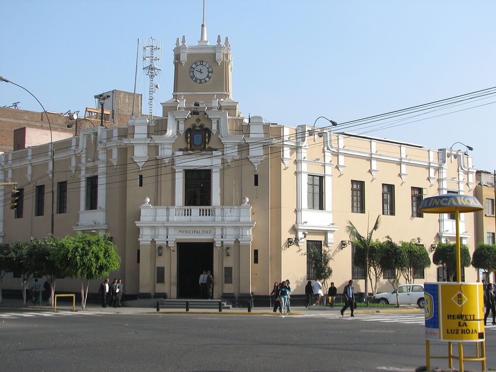

En este portal podrás encontrar información sobre impuestos, arbitrios y contribuciones que se aplican en la municipalidad. Nuestro objetivo es facilitar a los vecinos el acceso a la información y brindar un canal de atención directa.
Los tributos municipales son ingresos que permiten financiar los servicios públicos locales. Incluyen:
| Concepto | Monto (S/.) | Periodo |
|---|---|---|
| Limpieza Pública | 50.00 | Mensual |
| Parques y Jardines | 30.00 | Mensual |
| Serenazgo | 45.00 | Mensual |
| Trimestre | Fecha Límite |
|---|---|
| 1° Trimestre | 28 de febrero |
| 2° Trimestre | 31 de mayo |
| 3° Trimestre | 31 de agosto |
| 4° Trimestre | 30 de noviembre |